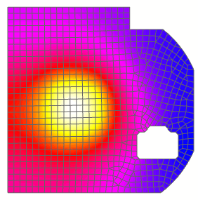

Display the thermal mapped results
 Simulation Navigator
Simulation Navigator
-
.gif) Results under Solution 1
Results under Solution 1
 Post Processing Navigator
Post Processing Navigator
-

 Temperature — Nodal (expand)
Temperature — Nodal (expand)
-
Scalar
-
Post View 2 (expand)
-
2D Elements (expand)
-
 CPU Mesh (deselect)
CPU Mesh (deselect)

|
Note |
The temperatures were mapped from triangular thermal elements to quad structural elements. |
 File → Save All
File → Save All